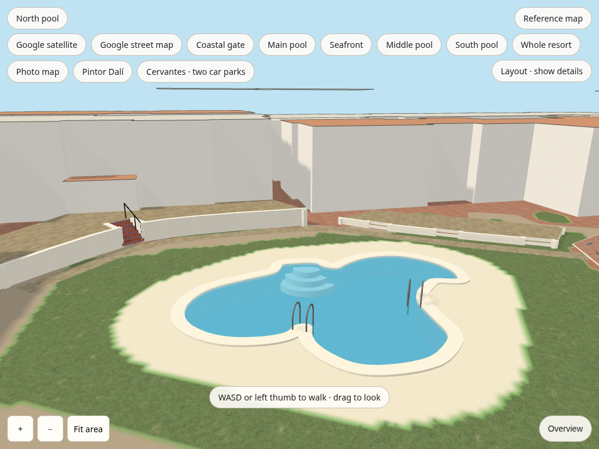

All seven results are NOT COMPARABLE as photographic matches. Photos establish visible identity/order, but the high captures retain uncertain camera pins and lack eye-height/pitch/intrinsic calibration. The avatar and crop are diagnostic. No geometry was moved. Open source images at full size for detail. Left source links expect sibling villacana-venture and villacana-reference checkouts; public GitHub sources are linked as fallback.
More useful for gross feature order than the default high capture, but fitted using the model pool and not independently calibrated. Cannot validate that same pool geometry or hidden patio bounds.
